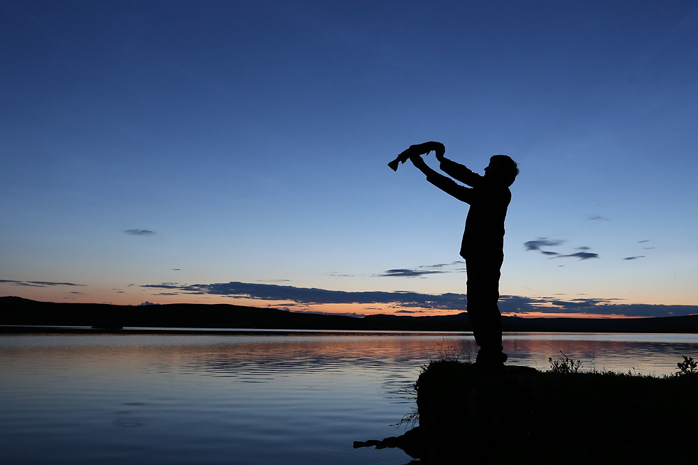
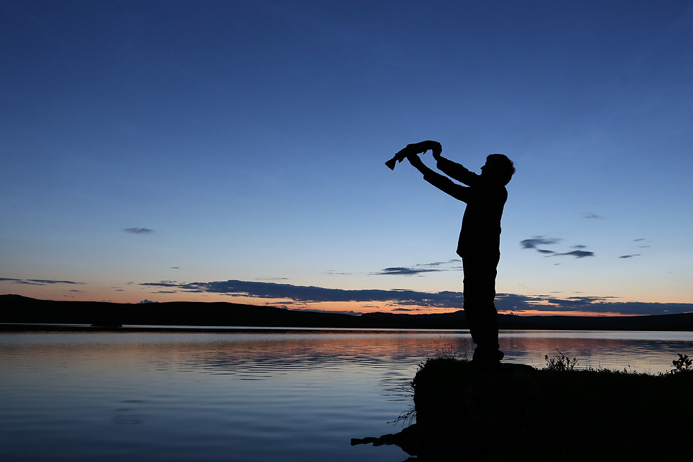

Bildekåseri
Jens Larssen tilbyr gjennom bildekåseri unike innblikk fra sine opplevelser i skog og mark.
Kåseriene kan settes sammen i innhold og lengde etter dine ønsker og vil bli
presentert ved Jens Larssen og Bård Bakås.
Et bildekåseri er en visuell presentasjon av en tur eller opplevelse presentert av en foredragsholder. Det er en flott mulighet for å utvikle interesse for naturen eller å oppleve den på en måte man ellers ikke kunne.
Ønsker du et bildekåseri eller videre henvendelser er det bare å ta kontakt.
 
